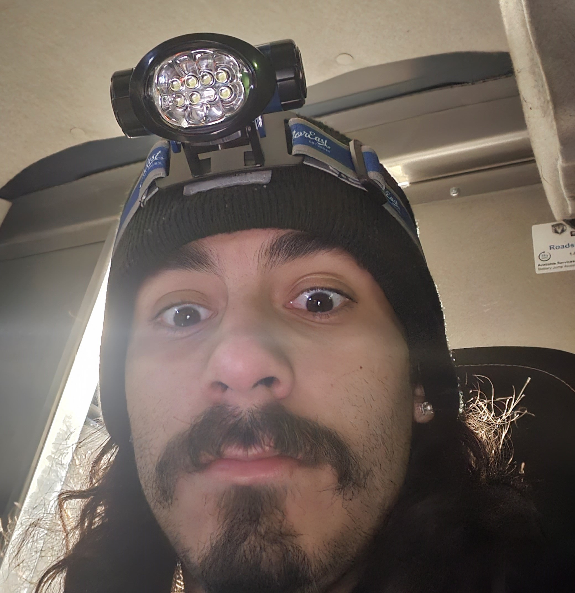

Bryan Avalos
Preferred Name: Bryan

About Me!
bryan
Discord Username: bryan05255
Hello! My name is Bryan Avalos and I’m a 5th year senior here at Lewis. I have two brothers and a sister who are all older than me.
I live in the New Lenox area so I’m not too far from Lewis.
These are my two majors that I am pursing: Computer Science and Forensic Criminal Investigation
I have always loved learning about technology my whole life and I think this is the major to learn more about it.
- Software Development Life Cylces
- More programming languages
- What to expect in the real world
I went to Mexico in the summer of 2024!
I went for about a week and it was fun to learn more about my culture.
I think it’s important to learn about where ou’re from and the roots that you come from.